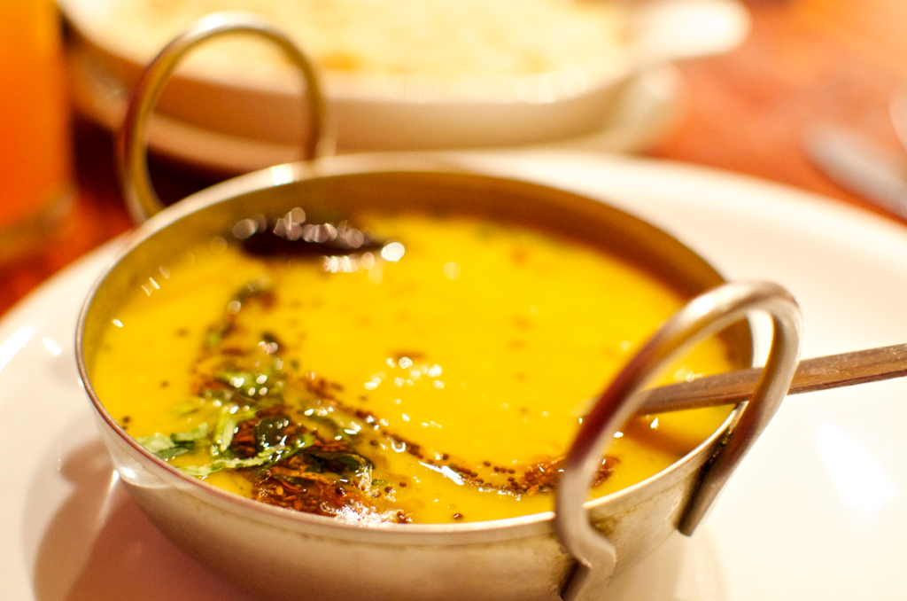

Creamy Lentil Soup

Description
Lentil soup is a fast & simple to make dish that can be customised to you preferences.
While it can be made in any season, it's particularly hearthy for a cold winter lunch.
Ingredients
NOTE: serves 1 👤 person
- 1 medium onion
- 1 medium carrot
- 1 medium bell pepper
- 1 table spoon of olive oil
- 125 g of red lentiles
- 300 ml of water
Steps
Cooking Duration: ⏰ 20-30 minutes
- Dice the onion, carrot and the bell peper in equally sized pieces
- Saute the onions in a pan with olive oil for 2-3 minutes
- Add the carrots and cook for another 2-3 minutes
- Add the bell pepper and cook for another 2-3 minutes
- Cover with water until everything is submerged
- Add the lentiles and cook until soft
- Add spices (salt, pepper, paprika - your choice) and blitz everything until creamy